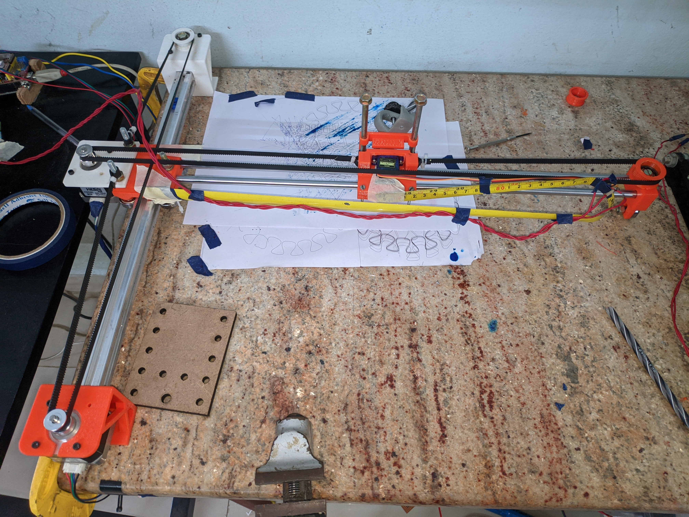

Plotter V2
Why build another plotter?
This is a revision of the old plotter that I built more than a year ago. It uses most of the similar parts that were used in the old plotter. The only problem that I had with my old plotter was the 'sagging' of the axis that is positioned in the cantilever. It drastically reduced the speed of writing as the servo motor had to travel more. The SG90 servo used in this build is fairly slow and noisy. I want to replace this with a magnetic solenoid, which is much quicker and more refined in my solidworks designs. I also imagined an insanely fast pen plotter like those IBM or Roland plotters.
Build and design process
The design was made using SolidWorks from scratch and some of the parts (motor, pulley) were downloaded from GrabCAD or McMasterCarr. There are only a few parts to this plotter. I printed them on my stock Anet A8. Soon I plan to upgrade this Anet A8 to a core xy printer. I had high hopes for this design, but it disappointed me.
With this design, as I also wanted a fairly large A3 sized printer and no sagging, I added a simple ball bearing on the other end so that this carriage can move any sag. With this, the servo has to do the tiniest movement.
The x-axis linear bearings roll on the aluminium profile. This turned out to be a bad idea in the end.

Software Used
For my old plotter, I was using GRBL for Arduino, but this time, as I repeatedly faced issues with GRBL for Arduino, I opted for ESP32_GRBL. This one comes with wifi and bluetooth. I use Vpype-gwrite to generate Gcode, and I also use Vpype to optimise my gcode to print faster.
In the build process I killed nearly 5 A4988 stepper motor drivers, one Arduino, and an ESP32 due to my carelessness.
Conclusions
What I learned from this design
This is another flawed design I would say the accuracy is worse than the old build, but what is better about this one is that it can print at marginally greater speeds, which can help for writing my lab records. For generative art, I would try to refine this design. I also learned from lurking on drawingbots' discord server that it's not so simple to make an insanely fast plotter with my kind of budget. Vintage plotters were $1000 back then, which converts to about $5000 today. With that kind of budget, any cheap AxiDraw would not be able to compete.
Another bad design choice I learned is to never roll hard materials on soft materials. It is like driving with steel wheels on a tarmac road. One of them is going to wear out, but when the materials have very different hardness values, one of them is going to wear out much quicker. Due to this, after a few days of using the plotter at max speeds, I checked something was lost because the quality of the prints was worse than I expected them to be. Nearly 1mm of aluminium was worn off from the extrusion as a ball bearing is much harder. In the future, I intend to buy actual linear bearings that are designed for these specific purposes.
The cost for building this printer is ~2500 rupees.
For now, I will use it for another year or 2 as I have to write my lab records frequently since we ended a major pandemic. I'm quite happy that I was able to finish this project.